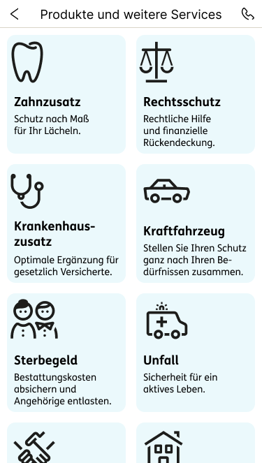
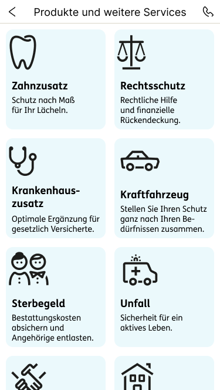

Kundenportal & App
Kundenportal "Meine Versicherungen"
Das ERGO Kundenportal bietet eine Vielzahl von Vorteilen und Funktionen, die den Kunden ein effizientes und benutzerfreundliches Erlebnis ermöglichen. Die wichtigsten Aspekte sind:
Vertragsanzeige und Dokumente:
Kunden erhalten eine detaillierte Übersicht über all ihre bestehenden Versicherungsverträge, einschließlich Policen, Deckungssummen und Prämien.
Online Services:
Kunden können Schäden online melden und den Bearbeitungsstatus in Echtzeit verfolgen. Dies beschleunigt den Prozess der Schadensregulierung erheblich. Darüber hinaus steht eine Vielzahl weiterer Services zur Verfügung.
Digitales Postfach
Papierlose Kommunikation und Verwaltung sparen Kosten und sind umweltfreundlicher. Auch für die Kunden entfallen Portokosten und der Aufwand für den Versand von Dokumenten.

 


ERGO App
Die ERGO App vereint digitale Welten der Ergo.de sowie des Kundenportals und bietet viele verschiedene Bereiche:
In Ihrem Kundenbereich „Meine Versicherungen“ in der App erhalten Kunden direkten Zugriff auf Ihre Verträge, die digitale Post und weitere Services und Vorteile.
Im Bereich „Produkte und weitere Services“ können Kunden das Angebot von ERGO kennenlernen. Von der Zahnzusatz- über die Kfz-Versicherung bis zur Hausrat-, Haftpflicht- oder Rechtsschutzversicherung: persönlichen Beitrag berechnen, Angebot erstellen lassen und speichern. Oder direkt online abschließen – alles in der ERGO App.
Aufgaben des Fachbereichs
Der Bereich Online Service fungiert als wichtige Schnittstelle zwischen den Fachabteilungen und den IT-Einheiten. Die Hauptaufgaben dieses Bereichs umfassen:
Anforderungsmanagement
Sammeln und Analysieren: Erfassen der Anforderungen und Bedürfnisse der Fachabteilungen und Kunden bezüglich Online-Services und digitalen Prozessen.
Priorisierung: Bewerten und Priorisieren der Anforderungen basierend auf Geschäftswert, Dringlichkeit und Machbarkeit.
Dokumentation: Präzise Dokumentation der Anforderungen und Erstellung von Lastenheften oder User Stories für die IT-Abteilungen.
Projektmanagement
Planung und Koordination: Erstellen von Projektplänen, Zeitplänen und Koordination der Implementierung zwischen den Fachabteilungen und IT-Einheiten.
Überwachung und Steuerung: Überwachen des Projektfortschritts, Identifizieren von Risiken und Problemen sowie Einleiten von Gegenmaßnahmen.
Kommunikation: Regelmäßige Abstimmung mit den Fachabteilungen und IT-Teams, um sicherzustellen, dass alle Beteiligten über den Projektstatus informiert sind und auftretende Fragen oder Probleme geklärt werden.
Innovationsmanagement
Trendbeobachtung: Beobachten von Markttrends und technologischen Entwicklungen, um proaktiv neue Möglichkeiten für digitale Services zu identifizieren.
Ideenentwicklung: Entwicklung und Bewertung von Ideen für neue digitale Services oder Verbesserungen bestehender Lösungen.
Ansprechpartner & Stakeholder
Der Bereich Online Service interagiert mit verschiedenen Ansprechpartnern und Abteilungen. Diese umfassen:
Fachabteilungen
- Versicherungssparten
- Vertrieb und Marketing
- Kundendienst und Kundenbetreuung
- Produktentwicklung
IT-Abteilungen
- Softwareentwicklung
- IT-Infrastruktur
- Demandmangement
Externe Dienstleister und Partner
- Beratungsunternehmen
- Dienstleistungsanbieter
- Kooperationspartner